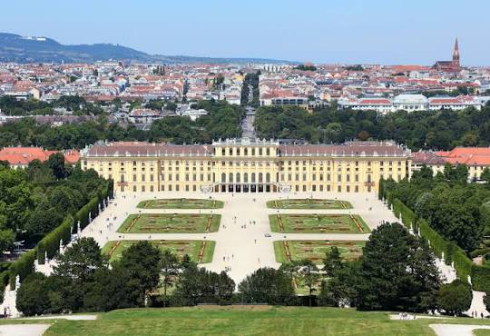
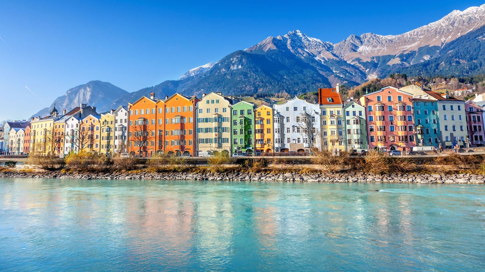
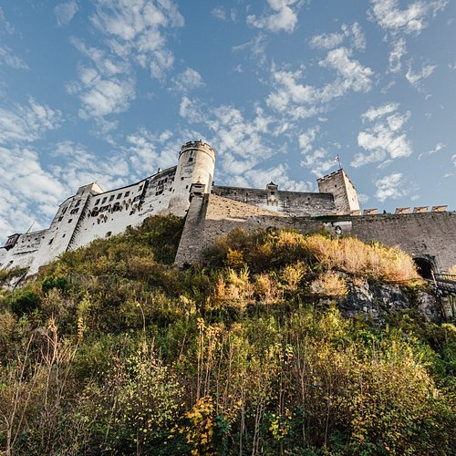
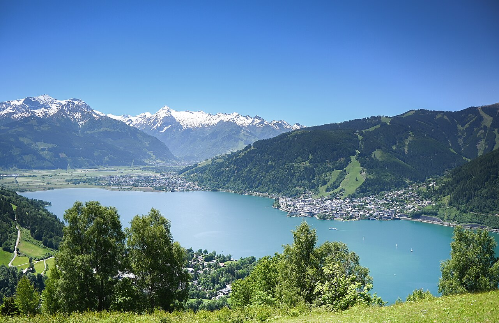

Austria adalah negara di Eropa Tengah yang terkenal dengan pemandangan Pegunungan Alps yang menakjubkan, kota-kota bersejarah, serta warisan musik klasik yang kaya. Dari keindahan danau Hallstatt hingga kemegahan istana di Wina, Austria menawarkan pengalaman bak negeri dongeng bagi setiap pengunjungnya.
Hallstatt Lake 🏔️

Vienna Castle 🏰
Must-Visit Places
Klik tempat favoritmu untuk melihat info detail ✨
Hallstatt
Click for details ✨
Schönbrunn
Click for details ✨

Innsbruck
Click for details ✨

Salzburg
Click for details ✨

Zell am See
Click for details ✨
Austria Destination
Hallstatt
Desa dongeng tercantik di pinggir danau yang dikelilingi Pegunungan Alpen. Terkenal dengan pemandangan rumah-rumah kayu bersejarah dan tambang garam tertua di dunia.
Austria Destination
Schönbrunn Palace
Istana megah bekas kediaman musim panas kekaisaran Habsburg di Wina. Memiliki 1.441 kamar dengan taman bunga yang sangat luas dan indah.
Austria Destination
Innsbruck
Ibu kota Tyrolean yang terletak tepat di lembah Alpen. Terkenal dengan atap emas kuno (Goldenes Dachl) dan lanskap olahraga musim dingin dunia.
Austria Destination
Salzburg
Kota kelahiran komponis legendaris Mozart dan lokasi syuting film klasik 'The Sound of Music'. Penuh dengan arsitektur barok yang indah.
Austria Destination
Zell am See
Kombinasi sempurna antara danau jernih berwarna biru kristal dan puncak gunung bersalju. Tempat favorit untuk berenang di musim panas dan ski di musim dingin.
 Hallstatt Lake 🏔️
Hallstatt Lake 🏔️